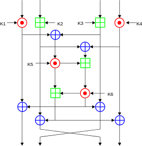
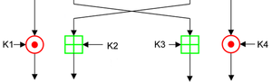
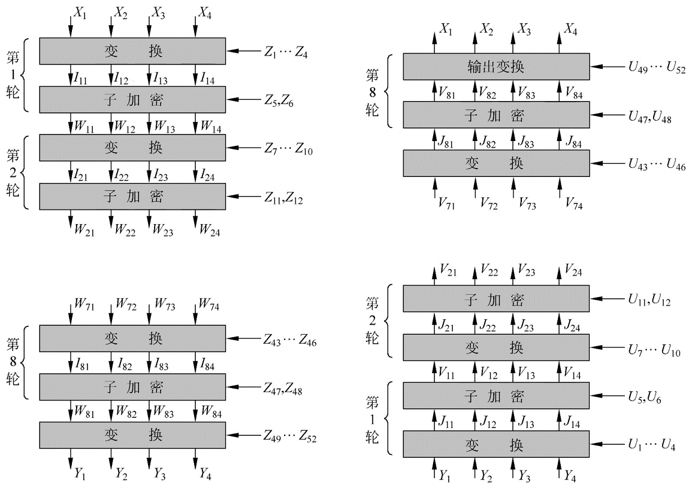

IDEA¶
Overview¶
**International Data Encryption Algorithm (IDEA), first known as the Improved Proposed Encryption Standard (IPES), is a symmetric key block cipher in cryptography. James Massey and Lai Xuejia Design, first introduced in 1991. This algorithm was proposed to replace the old data encryption standard DES. (from Wikipedia)
Basic Process¶
Key Generation¶
IDEA uses 6 keys in each round of encryption and then 4 keys in the final output round. So there are a total of 52.
- The first 8 keys are from the original key of the algorithm, K1 is taken from the upper 16 bits of the key, and K8 is taken from the lower 16 bits of the key.
- Move the key loop left by 25 bits to get the next round key, and then divide it into 8 groups again.
Encryption process¶
The IDEA encrypted block is 64 bits in size and uses a key length of 128 bits. The algorithm performs the same transformation 8 times on the input data block, except that the key used each time is different, and finally an output transformation is performed. Each round of operation

Both input and output can be a group of 16 bits. The main execution of each round has
- Bitwise XOR, ⊕
- Modular plus, the modulus is 2^{16}, ⊞
- Modular multiplication, the modulus is 2^{16}+1, ⊙. However, it should be noted that the input of 0x0000 will be modified to 2^{16}, and the output of 2^{16} will be modified to 0x0000.
Here we call the encryption method of the middle square consisting of K5 and K6 as MA. This is also an important part of the IDEA algorithm. In addition, we call MA_L the left side result of this part of the encryption, which will end up with the leftmost 16 bits; MA_R is the result of the encrypted right part of the part, and finally Will work with the third 16 bits.
The operation of the last output wheel is as follows

Decryption process¶
The decryption process is similar to the encryption process, mainly in the selection of its key.
- The first 4 subkeys of the decrypted key of the i(1-9)th round are derived from the first 4 subkeys of the 10th-ith round of the encryption process
- where the 1st and 4th decryption subkeys are the multiplicative inverses of the corresponding subkeys for 2^{16}+1.
- The second and third subkeys are taken as
- When the number of rounds is 2, ..., 8, the encrypted inverse of 2^{16} of the corresponding 3rd and 2nd subkeys is taken.
- When the number of rounds is 1 or 9, the encrypted inverse of 2^{16} corresponding to the corresponding 2nd and 3rd subkeys is taken.
- The 5th and 6th keys are unchanged.
Overall process¶

Let's prove the correctness of the algorithm. Here we focus on the first round of the decryption algorithm. First, let's first look at how Y_i is obtained.
$ Y_1 = W_ {81} odot Z_ {49} $
$ Y_2 = W_ {83} boxplus Z_ {50} $
$ Y_3 = W_ {82} boxplus Z_ {51} $
$ Y_4 = W_ {83} odot Z_ {52} $
When decrypting, the first round of direct conversion is
$ J_ {11} = Y_1 odot U_1 = Y_1 odot Z_ {49} ^ {- 1} = W_ {81} $
$ J_ {12} = Y_2 boxplus U2 = Y_2 boxplus Z_ {50} ^ {- 1} = W_ {83} $
$ J_ {13} = Y_3 boxplus U3 = Y_3 boxplus Z_ {51} ^ {- 1} = W_ {82} $
$ J_ {14} = Y_4 odot U_4 = Y_4 odot Z_ {52} ^ {- 1} = W_ {84} $
It can be seen that the result is only the opposite of the two 16-bit encryption results in the middle. Let's take a closer look at how W_{8i} was obtained.
$ W_ {81} = I_ {81} oplus MA_R (I_ {81} oplus I_ {83}, I_ {82} oplus I_ {84}) $
$ W_ {82} = I_ {83} oplus MA_R (I_ {81} oplus I_ {83}, I_ {82} oplus I_ {84}) $
$ W_ {83} = I_ {82} oplus MA_L (I_ {81} oplus I_ {83}, I_ {82} oplus I_ {84}) $
$ W_ {84} = I_ {84} oplus MA_L (I_ {81} oplus I_ {83}, I_ {82} oplus I_ {84}) $
So for V11
$ V_ {11} = J_ {11} oplus MA_R (J_ {11} oplus J_ {13}, J_ {12} oplus J_ {14}) $
By simply bringing in the existing values, obviously
$ V_ {11} = W_ {81} oplus MA_R (I_ {81} oplus I_ {83}, I_ {82} oplus I_ {84}) = I_ {81} $
For other elements, it is similar, then we will find that the first round of decryption results are exactly I_{81}, I_{83}, I_{82}, I_{84}.
Similarly, this relationship can be satisfied until
$ V_ {81} = I_ {11}, V_ {82} = I_ {13}, V_ {83} = I_ {12}, V_ {84} = I_ {14} $
Then finally a simple output transformation happens to get the value that was originally encrypted.
topic¶
- 2017 HITCON seccomp